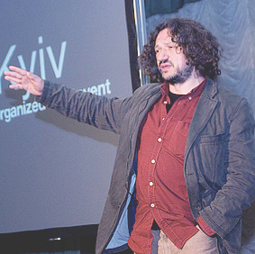

Друга подія TEDx в Україні«Краса розуму: ідеї для України»відбулась 24 квітня 2010 року в Києві в Будункувчителя. Вона зібрала 18 виступаючих, 162 людини в аудиторії та 224 глядача веб-трансляції.
Программа Події
Сесiя#1
Придумай!
-
 ТемаЗапрограмуй це!
ТемаЗапрограмуй це!
Єгор Анчишкін
-
 ТемаНанотехнології в Україні
ТемаНанотехнології в Україні
Валерій Мірочник
-
 ТемаІнновації у полі біфуркації
ТемаІнновації у полі біфуркації
Петро Смертенко
-
 Тема7 Runes of Business Marathon
Тема7 Runes of Business Marathon
Євгеній Уткін
-
 ТемаЗварювання по живому
ТемаЗварювання по живому
Дмитро Кункін
-
Єгор АнчишкінІТ-підприємець, засновник Viewdle
Закінчив Фізико-Tехнічний Інститут (при КПІ). За свою кар’єру в галузі розробки програмного забезпечення Єгор вів проекти для світових лідерів у сферах проектування сигнальних процессорів, дистрибуції мобільного контенту, віртуальних мобільних операторів та ін. У 2006 році разом з партнерами заснував старт-ап Viewdle, який створив декілька продуктів для розпізнавання облич у відео. Viewdle двічі визнавався кращим старт-апом Європи (за версіями найвпливовіших конференций LeWeb та Plugg) та підписав потужних клієнтів у США. На даний момент Єгор працює над новим проектом для звичайних рітейлерів, які вирішили спробувати онлайн канали.
Тема спічаЗапрограмуй це!
-
Валерій Мірочникдиректор з розвитку компанії NanoUnion
Валерій закінчив Київський Національний Університет імені Т. Шевченка, будував кар’єру у сфері маркетингових комунікацій, працючи як у агентствах, так і на стороні клієнтів: від асистента до маркетинг директора. Улюблена справа останніх років — розвиток старт-апів та перетворення перспективних ідей в успішні прибуткові бізнес-проекти. Крім того Валерій — один з засновників благочинного фонду «Україно! Я за тебе!»
Тема спічаНанотехнології в Україні
-
Петро Смертенкофізик, координатор програми EUREKA в Україні
Петро кандидат фізико-математичних наук, старший науковий співробітник Інституту фізики напівпровідників імені В.Є.Лашкарева НАН України. Він співавтор 18 авторських свідоцтв та патентів на винаходи СРСР, Росії та України, більше ніж 200 статей та 7 книжок. З 1999 року Петро — національний координатор інноваційної ринково направленої програми міжнародного науково-технічного співробітництва EUREKA (European Research Coordination Agency). Станом на 2009 рік в рамках програми в Україні впроваджено 25 проектів, націлених на здійснення конкурентоспроможних на світовому ринку досліджень та розробок у напрямах інформаційних та комунікаційних технологій, енергетики, медицини та біотехнології, транспорту, промислової автоматизації, екології тощо.
Тема спічаІнновації у полі біфуркації
-
Євгеній Уткінзасновник Квазар-Мікро
Нині – Голова Ради директорів «КM Core», Президент компанії «КМС Україна», Член Ради директорів ВАТ «НДІ МЕ і Мікрон» (Росія), Голова Ради директорів компанії «Polyteda» (Канада). Навчався у Московському інституті електронної техніки за спеціальністю «мікропроцесорні системи», у бізнес-школі INSEAD (Франція), бізнес-школі IMD (Швейцарія), на програмі VCEP (Venture Capital Executive Program) у Haas School of Business університету Berkeley (США). «Бізнесмен року» (1997), лауреат конкурсу «Топ-10 топ менеджерів Росії» (2007). Кар’єру починав електрослюсарем на шахті. Під його керівництвом компанія «Сітронікс» (Росія) увійшла на Лондонську фондову біржу з ринковою капіталізацією 2,3 млрд. доларів, що зробило її найбільшою в Східній Європі хай-тек компанію. Підтримує освітні та культурні проекти «KvazArt»: фестиваль сучасного мистецтва «Гогольfest», джазовий фестиваль «Jazz in Kiev», культурно-освітній центр «Майстер Клас». Захоплення: джаз, мистецтво, подорожі та спорт.
Тема спіча7 Runes of Business Marathon
-
Дмитро Кункінелектронник, асоціація Зварювання
Випускник факультету електроніки НТУУ «КПІ» у 2003 році, молодший науковий співробітник, аспірант Інституту електрозварювання імені Є.О.Патона, член Міжнародної Асоціації «Зварювання». Керівник кількох наукових досліджень, лауреат стипендій НАН України та Президента; власник патенту, співавтор 15 наукових публікацій.
Тема спічаЗварювання по живому
Сесiя#2
Озирнись!
-
 ТемаАутизм та мистецтво
ТемаАутизм та мистецтво
Тетяна Гершуні
-
 ТемаПолюс-полюс
ТемаПолюс-полюс
К. Могильник
-
 ТемаEco-house
ТемаEco-house
А. Бобровицький
-
 ТемаПитна вода
ТемаПитна вода
Андрій Мітченко
-
Тетяна Гершуніхудожниця, арт-проект АУТ
Народилася у Києві. У 1995 році закінчила курс теорії та історії мистецтва в Українській Академії Мистецтв. З 1994 року почала брати участь у незалежних художніх проектах. З 1997 по 2007 жила у Канаді, де у 2000 році закінчила магістерську програму з образотворчого мистецтва Університету провінції Саскатчеван. Разом з цим викладала основи малюнку, дизайну і теорію кольору у коледжах та вищих навчальних закладах провінціях Саскатчеван та Британська Колумбія. У 2009 році повернулась до України і працює незалежним художником і куратором арт-проектів у Києві.
Тема спічаАутизм та мистецтво
-
Костянтин Могильникмандрівник і письменник, команда EQUITES
Констянтин — письменник, сценарист, продюсер. Засновник у 1998 команди EQUITES, її «мозковий центр». Автор щоденника 40-денного голодування під час подорожі шляхом Колумба. Разом з Дмитром Каратєєвим автор 4 романів в рамках проекту Ключ.
Тема спічаПолюс-полюс
-
Андрій Бобровицькийеко-будівничий, керівник об’єднання «ХатаБобрів»
Більше 10 років він працює на будівельному майданчику, більше 6 років використовує місцеві натуральні матеріали. У процесі пошуку та розробки технологій для вирішення житлового питання Андрій здобув досвід, що дозволяє знизити вартість будівництва на 30-40%. Вже четвертий рік Андрій читає лекції та проводить практичні семінари на основі будівельних об’єктів, консультує організації та приватних осіб з питань використання натуральних матеріалів.
Тема спічаEco-house
-
Андрій Мітченко
Андрій Мітченко - доктор Вода, має вищу освіту хімічного факультету МГУ, у Києві захистив дисертацію на тему «Удосконалення сорбційних технологій видалення гумінових речовин з води для раціонального використання водних ресурсів». З 1991 року працював менеджером, а згодом — директором з розвитку бізнесу у групі компанії «Екософт», яка розробляє системи очищення води для житлових будинків та великих підприємств в Україні та закордоном.
Тема спічаПитна вода
Сесiя#3
Розвивай!
-
 ТемаАнатомія голосу
ТемаАнатомія голосу
О. Бобровников
-
 ТемаУкраїна-бренд
ТемаУкраїна-бренд
Андрій Федорів
-
 ТемаОсвіта 1-до-1
ТемаОсвіта 1-до-1
Дмитро Грязнов
-
Олексій Бобровников
Олексій Бобровников - журналіст і сценарист документальних фільмів у минулому на Інтері, а зараз у продакшн-студії «Лифт в облака», що спеціалізується на виробництві науково-популярних, історичних, публіцистичних фільмів і телепередач. Автор сценарію фільмів «Вакцини: бізнес на страху» (2009), що отримав спеціальний приз московського фестивалю Detective Fest, та «Анатомія голосу» (2010).
Тема спічаАнатомія голосу
-
Андрій Федорівбренд-менеджер України
Андрій — відомий спеціаліст у галузях маркетингу та реклами, наймолодший лауреат премії «Слід в рекламі», «Людина-бренд на рекламному ринку України 2009», керівник групи компаній UNITED Communications Group. 22 березня 2010 року він проголосив себе бренд-менеджером України.
Тема спічаУкраїна-бренд
-
Дмитро Грязновдиректор з розвитку корпоративних проектів Intel
Дмитро закінчив факультет інформатики та обчислювальної техніки НТУУ «КПІ» у 1995 році, після чого працював у компанії «Квазар-Мікро». Протягом останніх 10 років працює в Intel на посаді Директора з розвитку корпоративних проектів. Основні сфери діяльності Дмитра – просування сучасних архітектурних рішень та концепцій інформаційних технологій на ринку України, в тому числі і у сфері освіти. Очолює український напрямок проекту «World Ahead». Захоплюється історією та генеалогією.
Тема спічаОсвіта 1-до-1
Сесiя#4
Повір!
-
 ТемаПроектно-орієнтоване навчання
ТемаПроектно-орієнтоване навчання
Пауль Пшеничка
-
 ТемаТехнології порозуміння
ТемаТехнології порозуміння
Юлія Ліхоліт
-
 Тема5 Principles of Teaching
Тема5 Principles of Teaching
Роман Морозов
-
Пауль Пшеничка
Пауль Пшеничка - вчитель фізики Чернівецького ліцею №1, почесний член Лондонського інституту фізики, у 2004 році — кращий вчитель фізики світу, президент Чернівецького молодіжного наукового товариства «Квазар», заслужений вчитель України, один із засновників методу проектно-орієнтованого навчання у школах і лауреат премії Intel. За цим методом Пауль Францович навчав понад три тисячі учнів в Україні, викладав англійською та німецькою мовами у провідних вузах світу. Учні Пауля Францовича — переможці національних та міжнародних конкурсів.
Тема спічаАнатомія голосу
-
Юлія Ліхолітстудентка
Юлія — студентка 2-го курсу психології Національного авіаційного університету, Гуманітарного інституту. Народилася у 1991 році у місті Жмеринка Вінницької області. З весни 2007 року розвивається у вивчає підходи до вирішення конфліктів серед молоді. Влітку 2008 року почала працювати фасилітатором та медіатором у шкільних службах порозуміння. Сьогодні навчає і тренує медіаторів зі всіх куточків України.
Тема спічаТехнології порозуміння
-
Роман Морозоворганізатор МПЦ ШЕЛTER+
Він один з організаторів та лідерів, програмний директор молодіжно-підліткового центру ШELTER+ у Кривому Розі. Роман проводить авторські тренінги з лідерства, волонтерства, командної роботи, свідомого життя, світогляду. Займається дизайном, музикою та подорожує автостопом.
Тема спіча5 Principles of Teaching
Сесiя#5
Твори!
-
 ТемаМіська скульптура
ТемаМіська скульптура
В. Білоконь
-
 ТемаСтаровинна музика
ТемаСтаровинна музика
Т. Компаніченко
-

ТемаCultural Geopolitics
Влад Троїцький
-
Володимир Білоконьскульптор
Володимр працював ковалем і одного дня він спробував зробити із заліза підсвічник. Спроба була вдалою. Після чого на прохання друзів почав робити всілякі металеві фігурки для побуту, що змусило Володимира кинути робітничу справу десять років тому і розпочати свій митецький шлях. Перші роботи незалежного художника можна було побачити на Андріївському узвозі, а сьогодні його роботи прикрашають вулиці Києва. Майстер заліза перетворює метал у живі казкові або алегоричні образи.
Тема спічаМіська скульптура
-
Тарас Компаніченкокобзар, Хорея Козацька
Тарас майстерно грає на кобзі, бандурі, лірі, волинці, знаходить у приватних європейських архівах і виконує музичні твори середньовіччя, барокко, класицизму, романтизму, часів української революції 1918-1922 років. Співає народні пісні українською, церковнослов’янською, старопольською, польською, французькою та німецькою мовами. Він — братчик Кобзарського цеху в Києві, соліст міжнародного хору «Академiя традицiй», рок-фолькового гурту «Карпатiянs» та гурту «Хорея Козацька». Згідно з традиціями кобзарювання Тараса можна почути біля Михайлівського собору, Покровської церкви чи в Пирогово.
Тема спічаСтаровинна музика
-
Влад Троїцькийорганізатор ГОГОЛЬFEST та ЦСМ «ДАХ»
Влад художній керівник, режисер, ідейний натхненник Київського центру сучасного мистецтва «ДАХ» (з 1994-го), президент Міжнародного фестивалю сучасного мистецтва «ГОГОЛЬFEST» (з 2007-го), засновник української фольк-групи «ДахаБраха», бізнесмен, меценат, за освітою — радіофізик та режисер (РАТІ). Рідне місто — Улан-Уде в Бурятії.
Тема спічаCultural Geopolitics